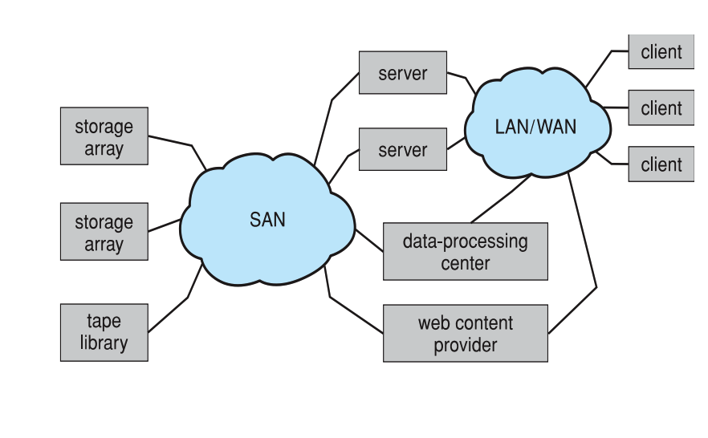
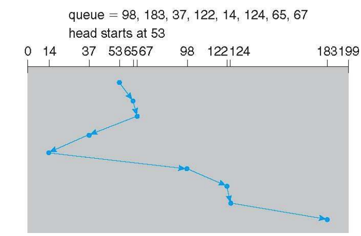

Storage Area Network
Comprised of Storage Arrays
Storage Array
- Array of storage devices, for instance 10 hard drives
- Shared storage, more efficient
- Has ports to connect hosts to array

- Common in large environments
- Defined as one or more storage arrays
- Hosts are also attached to switches
- Often hot swappable, easy to add/remove new storage
Network-Attached Storage
- Made available over a network instead of a local connection (i.e a bus)
- NFS (network file system) and CIFS (windows file system) are common protocoals
- Implemented over remote procde calls (RPCs) between host and sotrage, typically over network
Shortest Seek Time First
Don't know why this isn't in the textbook readings, but whatevs.
Basically, wherever the head is, the location that is the closest to you, you go for.
